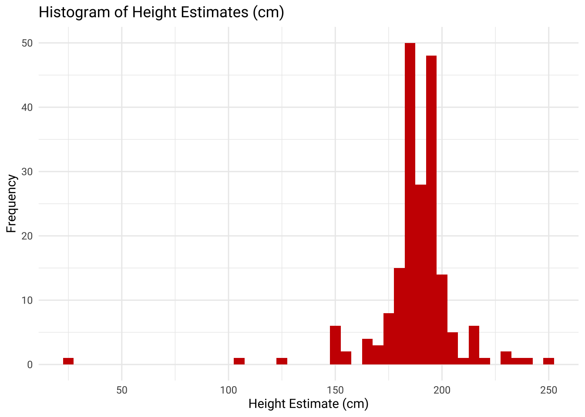
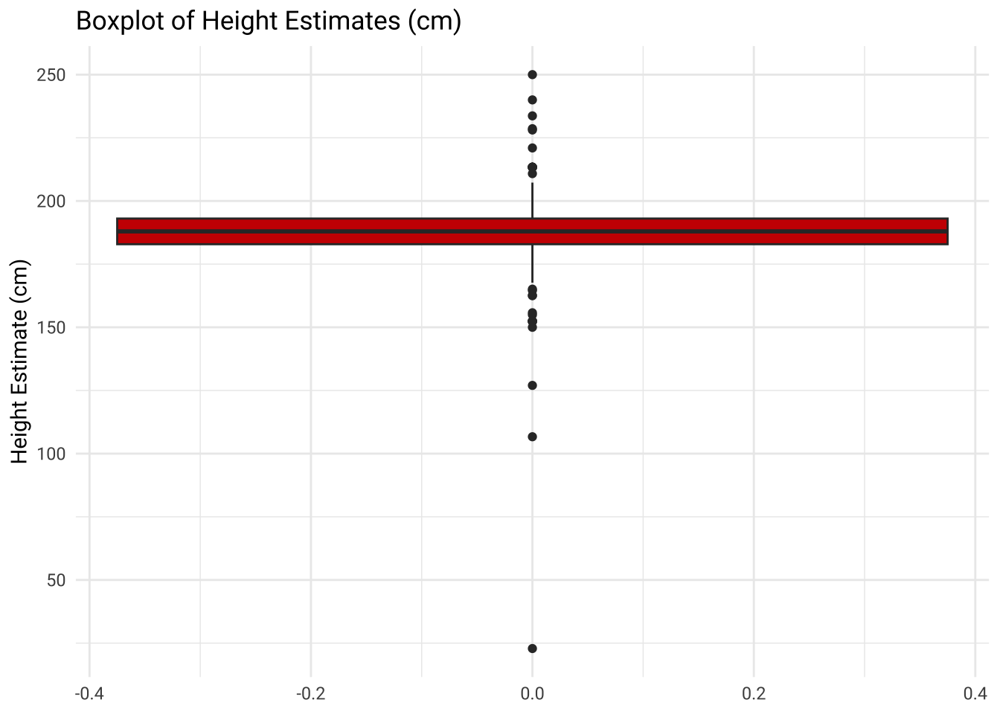

library(conflicted)
library(skimr)
library(psych)
library(tidyverse)
library(janitor)
library(measurements)
library(knitr)
library(kableExtra)
library(showtext)
conflicts_prefer(dplyr::lag)
conflicts_prefer(dplyr::filter)
options(scipen = 999, digits = 2)
font_add_google("Roboto", "Roboto")
font_add_google("Roboto Mono", "Roboto Mono")
showtext_auto()Using Data Moves to Make Sense of Height Estimates
Data Moves for Making Sense of Height Estimations
At an activity posted at estimation180.com, students are asked to estimate the height of the man in this picture:
In considering the height, students are asked to give
- a lower limit (what would be a lower bound for the man’s height)
- upper limit (what would be an upper bound for the man’s height)
- a specific estimate for the height
- provide a rationale for their estimate
Load Packages and Set Options
Import and Examine Data
height_est <- read_csv("Day 01 Height Estimates from Fergussen.csv")Scan the data and check for missing values
skim(height_est)| Name | height_est |
| Number of rows | 39195 |
| Number of columns | 6 |
| _______________________ | |
| Column type frequency: | |
| character | 6 |
| ________________________ | |
| Group variables | None |
Variable type: character
| skim_variable | n_missing | complete_rate | min | max | empty | n_unique | whitespace |
|---|---|---|---|---|---|---|---|
| Timestamp | 0 | 1 | 16 | 19 | 0 | 38227 | 0 |
| What’s too LOW? | 2 | 1 | 1 | 433 | 0 | 3417 | 0 |
| What’s too HIGH? | 1 | 1 | 1 | 1783 | 0 | 4563 | 0 |
| Your estimate. | 2 | 1 | 1 | 557 | 0 | 4615 | 0 |
| Your reasoning. | 27 | 1 | 1 | 4103 | 0 | 24680 | 0 |
| Your name. | 12 | 1 | 1 | 550 | 0 | 17362 | 0 |
Remove missing rows, create easier to use variable names, and give timestamp correct type
height_est <- height_est |>
mutate(Timestamp = mdy_hms(Timestamp)) |>
clean_names() |>
filter(!(
is.na(whats_too_low) &
is.na(whats_too_high) & is.na(your_estimate)
))glimpse(height_est)Rows: 39,194
Columns: 6
$ timestamp <dttm> 2014-06-27 13:36:55, 2014-06-29 11:49:03, 2014-06-29 2…
$ whats_too_low <chr> "4", "2\"", "5 feet", "3 feet", "72 in", "1 Ft", "100 i…
$ whats_too_high <chr> "7", "10'", "7 feet", "8 feet", "90 in", "10 Ft", "10 i…
$ your_estimate <chr> "5 ft 10in", "6\"2\"", "6' 4\"", "6 feet", "80 in", "6 …
$ your_reasoning <chr> "The fence is probably 3 ft", "I used the railing as a …
$ your_name <chr> "Sam", "Scott", "Derek", "Bob", "k", "I", "Strohl", "Ev…Sample Data
Create a sample of 200 observations using simple random sampling
set.seed(557)
height_est_sample <- height_est |>
slice_sample(n = 200)Scan and clean sample observations
glimpse(height_est_sample)Rows: 200
Columns: 6
$ timestamp <dttm> 2016-11-30 16:43:21, 2017-10-23 08:43:03, 2016-08-09 1…
$ whats_too_low <chr> "5\"", "4 feet", "4 feet", "5\"5", "5''9", "2'0", "3 fe…
$ whats_too_high <chr> "7\"", "12 feet", "7 feet", "7\"0", "6''7", "7'0", "8 f…
$ your_estimate <chr> "6' 5\"", "6 feet", "6'2\"", "6\"2", "6''0", "6'3", "6 …
$ your_reasoning <chr> "6' 4\"", "7 feet would be too tall but 5 feet would be…
$ your_name <chr> "Joanna", "Forrest J. S. M.", "Kaitlyn", "adsf", "grace…height_cols <- c("whats_too_low", "whats_too_high", "your_estimate")height_est_sample <- height_est_sample |>
mutate(
across(all_of(height_cols), ~ str_trim(str_to_lower(.x))),
your_reasoning = str_trim(str_to_sentence(your_reasoning)),
your_name = str_trim(str_to_title(your_name))
)skim(height_est_sample)| Name | height_est_sample |
| Number of rows | 200 |
| Number of columns | 6 |
| _______________________ | |
| Column type frequency: | |
| character | 5 |
| POSIXct | 1 |
| ________________________ | |
| Group variables | None |
Variable type: character
| skim_variable | n_missing | complete_rate | min | max | empty | n_unique | whitespace |
|---|---|---|---|---|---|---|---|
| whats_too_low | 0 | 1 | 1 | 23 | 0 | 109 | 0 |
| whats_too_high | 0 | 1 | 1 | 82 | 0 | 118 | 0 |
| your_estimate | 0 | 1 | 1 | 19 | 0 | 146 | 0 |
| your_reasoning | 1 | 1 | 1 | 201 | 0 | 187 | 0 |
| your_name | 0 | 1 | 1 | 33 | 0 | 187 | 0 |
Variable type: POSIXct
| skim_variable | n_missing | complete_rate | min | max | median | n_unique |
|---|---|---|---|---|---|---|
| timestamp | 0 | 1 | 2014-07-09 05:20:54 | 2018-06-12 19:54:25 | 2016-12-03 00:20:52 | 200 |
Get a sense of frequency of measurement units
height_est_sample |>
summarise(across(
all_of(height_cols),
list(
feet = ~ sum(
str_detect(.x, "'|(feet|foot|ft|feeet|toot|fot|oot|feat)\\b"),
na.rm = TRUE
),
inch = ~ sum(
str_detect(.x, "\"|(inches|inch|in|inces|invhes)\\b"),
na.rm = TRUE
),
meter = ~ sum(
str_detect(.x, "(meters|metres|meter|metre)\\b|(?<!c)m\\b"),
na.rm = TRUE
),
cm = ~ sum(
str_detect(.x, "(centimeters|centimetres|cent|cm)\\b"),
na.rm = TRUE
)
),
.names = "{.col}_{.fn}"
))# A tibble: 1 × 12
whats_too_low_feet whats_too_low_inch whats_too_low_meter whats_too_low_cm
<int> <int> <int> <int>
1 120 27 14 15
# ℹ 8 more variables: whats_too_high_feet <int>, whats_too_high_inch <int>,
# whats_too_high_meter <int>, whats_too_high_cm <int>,
# your_estimate_feet <int>, your_estimate_inch <int>,
# your_estimate_meter <int>, your_estimate_cm <int>Attempt to programmatically apply consistent unit designations in anticipation of using measurements package to convert all to cm
height_est_sample_mod <- height_est_sample |>
mutate(
across(
all_of(height_cols),
~ .x |>
str_replace_all("'|(feet|foot|ft|feeet|toot|fot|oot|feat)\\b", " ft ") |>
str_replace_all("\"|(inches|inch|in|inces|invhes)\\b", " inch ") |>
str_replace_all("(meters|metres|meter|metre)\\b", " m ") |>
str_replace_all("(centimeters|centimetres|cent|cm)\\b", " cm ") |>
str_replace_all("(?<!c)m\\b", " m "),
.names = "{.col}_mod"
)
)height_est_sample_mod |>
select(
timestamp,
your_name,
your_estimate_mod,
your_estimate,
whats_too_low_mod,
whats_too_low,
whats_too_high_mod,
whats_too_high,
your_reasoning
) |>
kable() |>
kable_styling() |>
scroll_box(width = "100%", height = "400px")| timestamp | your_name | your_estimate_mod | your_estimate | whats_too_low_mod | whats_too_low | whats_too_high_mod | whats_too_high | your_reasoning |
|---|---|---|---|---|---|---|---|---|
| 2016-11-30 16:43:21 | Joanna | 6 ft 5 inch | 6' 5" | 5 inch | 5" | 7 inch | 7" | 6' 4" |
| 2017-10-23 08:43:03 | Forrest J. S. M. | 6 ft | 6 feet | 4 ft | 4 feet | 12 ft | 12 feet | 7 feet would be too tall but 5 feet would be too short so 6 feet should be the answer. |
| 2016-08-09 15:39:47 | Kaitlyn | 6 ft 2 inch | 6'2" | 4 ft | 4 feet | 7 ft | 7 feet | Most people are more then 5 feet tall. |
| 2014-08-15 07:23:12 | Adsf | 6 inch 2 | 6"2 | 5 inch 5 | 5"5 | 7 inch 0 | 7"0 | He looks tall, shrubs are ususally 3 ft and he looks double that size |
| 2015-09-28 11:19:59 | Gracey | 6 ft ft 0 | 6''0 | 5 ft ft 9 | 5''9 | 6 ft ft 7 | 6''7 | He is taller than the fence |
| 2015-09-16 13:32:37 | Terri Thomas | 6 ft 3 | 6'3 | 2 ft 0 | 2'0 | 7 ft 0 | 7'0 | He could be a little over 6'0. |
| 2017-11-13 05:00:32 | Karen | 6 ft | 6 feet | 3 ft | 3 feet | 8 ft | 8 feet | Fence is probably 4 feet, he is about 2/6 or 1/3 taller than the fence |
| 2015-11-09 11:35:15 | Francesca | 6 ft | 6 feet | 5 ft | 5 feet | 8 ft | 8 feet | Because he looked as tall as my dad and my is 6 foot |
| 2018-03-18 20:51:49 | Ws | 6 ft 4 inch | 6'4" | 5 inch | 5" | 7 inch | 7" | Fence is approximately 4 1/2 feet high |
| 2017-08-24 15:40:51 | Vignesh | 6 ft 4 | 6'4 | 1 ft | 1 ft | 9 ft | 9 ft | No reasoning |
| 2014-12-09 08:56:22 | Jack Kostecki | 6ft1 inch | 6ft1inches | 4 ft | 4 ft | 8 ft | 8 ft | Normal adults are from 5ft to 6ft something and i thought he was a bit taller than 5ft 11 inches |
| 2015-07-08 07:33:10 | Chris | 6 ft 2 inch | 6'2" | 2 inch | 2 inches | 10 ft | 10' | The fence in the background is typically 3 feet high |
| 2015-05-26 09:11:02 | Stephanie Rios | he is 6.2 | he is 6.2 | it is too low to be 4.5 | it is too low to be 4.5 | it is too high to be 6.8 | it is too high to be 6.8 | My estimate is that he is 6.3 because he is taller than a fence and looks tall |
| 2015-10-16 08:08:03 | Cadan | 6 ft 4 inch | 6 feet 4 inches | 3 ft | 3 feeet | 7 ft | 7 feet | I gussed my uncle. |
| 2017-02-04 22:34:22 | Fred | 186 cm | 186cm | 140 cm | 140cm | 220 cm | 220cm | Pool gate is high, you can see he is a tall man |
| 2014-10-06 20:32:18 | Jason | 6 ft 9 inch | 6'9" | 5 ft 10 inch | 5'10" | 7 ft | 7' | The fence is about 4 feet high. Mr. Stadel is a little less than 3/4 again as tall as the fence. |
| 2018-01-18 12:13:26 | Carter Wilson | 5 ft | 5 feet | 1 ft | 1 feet | 10 ft | 10 feet | I'm 4 feet and he is taller. |
| 2015-10-02 11:00:48 | Abel | 6 ft | 6ft | 5 ft | 5ft | 7 ft | 7ft | The fasd esn 4ft |
| 2014-08-18 05:41:15 | Monty | 6 | 6 | 3 | 3 | 7 | 7 | I used the height of the fence to help |
| 2016-03-19 13:14:12 | Emartin | 6 ft 4 inch | 6' 4" | 1 ft | 1' | 8 ft 9 inch | 8' 9" | The fence |
| 2016-11-16 11:45:03 | Demajay | 6 ft 4 inch | 6'4" | 1 ft | 1foot | 10 ft | 10 feet | Grown man |
| 2017-03-21 08:28:17 | Kristine | 6 ft 1 inch | 6 feet 1 inches | 4 ft | 4 feet | 8 ft | 8 feet | Because he wouldn't be 4 feet and if he was, then he would be the same height as the gate. So he is a bit higher than the gate. |
| 2017-10-03 08:48:27 | Daniel Vogt | 6 ft 4 | 6'4 | 4 ft | 4 feet | 8 ft | 8 feet | Looks really tall considering the fence and angle |
| 2018-03-05 08:19:41 | Karen | 73 inch | 73 inches | 60 inch | 60 inches | 75 inch | 75 inches | Compared to the fence |
| 2016-10-17 11:58:03 | Gabighd | 6 ft | 6 feet | 4 | 4 | 8 | 8 | I noticed |
| 2016-09-09 05:28:26 | Class 4/5 | 6 ft 7 inch | 6'7" | 5 ft 11 inch | 5'11" | 9 inch 10 inch | 9"10" | We decided as a class |
| 2017-06-13 11:49:39 | Hailey | 9 ft | 9 feet | 5 ft | 5 feet | 10 ft | 10 feet | He is 9 fet tall because big feet and higher than a gate |
| 2017-08-03 07:31:00 | Mrs. Triolo's Class | 6 ft 5 | 6'5 | 1 ft | 1' | 10 ft | 10 ft | I compared him to the gate |
| 2017-08-18 07:23:33 | Hi | 4 ft 2 | 4' 2 | 1 ft 2 | 1'2 | 8 ft 2 | 8'2 | I loked at how big he is compared to other objectd |
| 2016-10-17 11:57:35 | Doug | 178 cm | 178cm | 100 cm | 100cm | 500 cm | 500cm | Looks average in height, used fence as a guide |
| 2016-02-09 07:26:52 | Cody | 6.4 | 6.4 | 5 | 5 | 7 | 7 | He's twice the size of the fence |
| 2018-01-26 11:12:54 | Danielle | 6.3 | 6.3 | 4.3 ft | 4.3 feet | 8.9 ft | 8.9 feet | My dad is 6.3 feet and that man looks as tall as my dad |
| 2017-11-17 11:04:04 | Jenni | 6 ft 2 inch | 6 feet 2 inches | 4 ft | 4 feet | 10 ft | 10 feet | The fence is probably 3 1/2 feet and he is about 3 feet taller than the fence |
| 2016-09-12 06:11:00 | Luci | 6 ft 4 | 6 foot 4 | 3 1/2 ft | 3 1/2 feet | 9 ft | 9 feet | I used the fence as a guide |
| 2017-10-13 05:36:02 | Carole | 200 | 200 | 50 | 50 | 500 | 500 | 175 |
| 2017-10-23 10:03:42 | Mrs. Spink's A.m. Class | 6 ft 6 inch | 6'6" | 5 ft 4 inch | 5' 4" | 7 ft 4 inch | 7'4" | We guess that the fence is about 4' and he makes it look small. |
| 2017-05-23 14:00:12 | Trenton | 6,4 | 6,4 | 5 ft | 5 feet | 7 ft | 7 feet | I think because he looks so tall |
| 2017-03-03 12:12:11 | Allison | 6 ft | 6 feet | 5 ft | 5 feet | 7 ft | 7 feet | I guessed |
| 2015-12-10 12:39:34 | Luna | 6.3 | 6.3 | 1 ft | 1 ft | 100 | 100 | I guessed |
| 2016-11-09 12:52:10 | Moe | 196 cm | 196cm | 1 cm | 1cm | 60 m | 60m | The gate |
| 2015-10-07 10:48:03 | Skye Neve | 6.4 ft | 6.4 feet | 1 cm | 1cm | 10 ft | 10feet | Well i gussed |
| 2018-06-12 19:54:25 | Callah | 5 and a half ft | 5 and a half feet | 4 ft | 4 feet | 7 ft | 7 feet | Because the fence has to be at least 4 feet tall and he is taller than the fence |
| 2017-10-16 08:57:40 | Jarrett | 6 ft 2 | 6'2 | 4 ft 0 | 4'0 | 7 ft 0 | 7'0 | I seen that the gate looked like 3 feet so it looked like he was double that hight |
| 2015-09-28 11:00:59 | Cole | 6 ft 0 | 6'0 | 5 ft 0 | 5'0 | 6 ft 4 | 6'4 | I made a ballpark |
| 2017-04-06 18:13:25 | Roth | 6.5 | 6.5 | 6.1 | 6.1 | 6.8 | 6.8 | He's tall and slim |
| 2017-03-18 14:20:34 | Alisa | 6 ft 4 inch | 6 ft 4 in | 5 ft | 5 ft | 7 ft | 7 ft | Men are generally around 5 ft 7 in to 6ft 5in. He looks pretty tall. |
| 2017-11-14 10:49:34 | John Cena | 1.93 m | 1.93 m | 1 cm | 1 cm | 10 m | 10 m | He is a grown man |
| 2014-09-26 10:56:00 | Mr. Brummond's Algebra I 7th Hour | 5 inch 11 inch | 5"11" | 4 ft 6 inch | 4'6" | 6 ft 3 inch | 6'3" | We compared the guy to the fence, shrub; we also compared average height of a man. We used logic. |
| 2014-11-14 07:27:01 | Joan | 7 ft | 7 feet | 3 ft | 3 feet | 9 ft | 9 feet | Taller than fence |
| 2018-02-07 10:28:08 | Mlle Fahim's Class | 185 cm | 185cm | 130 cm | 130cm | 200 cm | 200cm | Compared to our teacher who is 160cm, he seems about 25cms taller. |
| 2017-08-28 10:18:40 | A | 6 ft 11 inch | 6 feet 11in | 6 ft | 6 feet | 7 ft | 7 feet | S |
| 2017-11-01 04:05:30 | Don't Have One | 6 ft | 6 feet | 4 ft | 4 feet | 7 ft | 7 feet | The fence is about three feet tall and mr.standel is about twice the size |
| 2018-05-21 14:10:37 | Ud | 5.11 | 5.11 | 1 | 1 | 8 | 8 | Fences are usually four feet |
| 2015-11-04 13:20:20 | Fred | 6 ft 4 inch | 6 feet 4 invhes | 5 ft 3 inch | 5 foot 3 inches | 7 ft 4 inch | 7 feet 4 inches | We saw his wifes height. |
| 2017-10-17 16:16:31 | Lisa Ann Fales-Iliff | 6 ft ft | 6'' | 5 ft ft 1 | 5''1 | 10 ft ft | 10'' | I guessed |
| 2015-08-24 11:01:25 | 5th | 6 | 6 | 4 | 4 | 10 | 10 | Fdh |
| 2016-10-25 08:58:54 | Skyler | 7 ft | 7' | 2 | 2 | 15 | 15 | I think the gate is close to five feet tall. |
| 2015-06-19 07:08:43 | Susan | 6 ft 4 inch | 6 feet 4 inches | 4 ft | 4 feet | 7 ft | 7 feet | It looks like he is standing in front of a 5 feet fence which appears smaller due to perspective. |
| 2015-08-26 08:00:47 | Jamie | 6 ft 4 inch | 6 feet 4 inches | 4 ft | 4 feet | 8 ft | 8 feet | I know my son is 6'2 and he looks taller than him |
| 2017-01-04 07:19:22 | Delaney | 6 1/2 ft | 6 1/2 feet | 5 ft | 5 feet | 7 ft | 7 feet | 3 foot bush |
| 2016-04-09 00:12:39 | Jenelle | 6,3 ft | 6,3 feet | 4 ft | 4feet | 7 ft | 7 feet | Moast mens means are at a range between 5 and 6 feet so i used my priorr knolage to make a range |
| 2017-11-07 07:48:59 | Ms. Gerber's Class | 6 inch 8 inch | 6"8" | 5 ft 8 inch | 5'8" | 7 inch | 7" | He looked about a foot taller than my teacher who is 5'8" |
| 2015-09-11 19:00:53 | Jill | 6 ft 3 inch | 6 feet 3 inches | 4 ft | 4 feet | 7 ft | 7 feet | I think the fence is 4 feet and estimated at least 2 more feet above the gate |
| 2017-03-14 06:56:19 | Cody | 6 | 6 | 1 | 1 | 100000 | 100000 | Crazy gusse |
| 2017-08-22 08:44:20 | Hayden | 6 ft and 4 inch | 6 feet and 4 inches | 5 ft | 5 feet | 7 ft | 7 feet | Because hes smaller than schack |
| 2016-10-31 04:12:05 | Y4jm | 6 ft | 6ft | 4 ft | 4ft | 8 ft | 8ft | Taller than the fence |
| 2018-04-03 10:25:15 | Omae Wa Mou Shindeiru | 5.9 m | 5.9m | 3 m | 3m | 8 m | 8m | He looks that tall |
| 2016-09-12 10:35:03 | Caitlyn | 5 ft 6 | 5'6 | 3 ft 4 | 3'4 | 9 ft 8 | 9'8 | I think this because because of the height of the bushes |
| 2017-01-20 12:58:40 | Sherlyn | 6 ft .4 inch | 6ft.4in | 5 ft | 5ft | 7 ft | 7ft | He look a little to high than 5ft |
| 2016-09-15 13:31:54 | Winkler232 | 7ft8 inch | 7ft8in | 5 ft | 5ft | 8 ft | 8ft | Between 6ft 8ft |
| 2017-04-21 11:18:42 | Kevin | 6 ft 4 | 6'4 | 4 | 4 | 10 | 10 | NA |
| 2017-01-09 07:36:35 | Elias Homeroom | 6 | 6 | 4 | 4 | 10 | 10 | I know he's taller than 4 feet, but shorter than 10 feet |
| 2017-09-19 05:45:19 | Bryan Austin | 6.7 | 6.7 | 5.11 | 5.11 | 7 | 7 | He is not 7 feet and not 5.11 feet so it is reasonable to say that he is in beetween |
| 2017-09-14 09:28:28 | Olivia | 6 ft 4 inch | 6'4" | 4 ft 5 inch | 4'5" | 8 ft 5 inch | 8'5" | He looks it |
| 2016-08-26 13:05:55 | Jasmin | 60 | 60 | 7 | 7 | 10 | 10 | I tried to figure it out |
| 2016-11-14 12:10:34 | Cuka Munga | 6.2 | 6.2 | 0 | 0 | 9e+41 | 9e+41 | Because i am depressed |
| 2015-09-09 11:07:23 | Francisco Pacheco | 6.1 | 6.1 | 2.1 | 2.1 | 7.3 | 7.3 | Most men are hight 6.0 to 7.0 |
| 2015-09-29 08:40:50 | Jeff | 5 ft 8 | 5'8 | 5 ft 2 | 5'2 | 6 ft 7 | 6'7 | 6'4 |
| 2017-09-10 14:31:12 | Mr. S | 2.4 m | 2.4 metres | 1 m | 1 metre | 3 m | 3 metres | Dunno |
| 2016-11-21 07:59:55 | Nia And April | 6 ft 1 | 6'1 | 4 ft | 4 feet | 7+ ft | 7+ feet | We used the average size of a fence and the bush |
| 2017-09-06 10:43:45 | Collin Merkel | 6 ft 2 ft ft | 6' 2'' | 5 ft | 5' | 7 ft | 7' | The suit is lanky and tight, the fence and bush are much shorter than he is. |
| 2016-02-06 15:11:06 | Susanna | 7 ft | 7 ft | 4 ft . | 4 ft. | 100 ft . | 100 ft. | I think that because the bush is about 3 feet and another bush is 3 feet so that is 6 feet then i added 1 more foot to get 7 feet |
| 2018-03-14 10:22:41 | Ndarri🤓 | | .4 | | .4 | | | | | | 000 | | 000 | | judged by the house in the background | |
| 2014-10-01 10:58:51 | Creston | 5 ft 11 inch | 5'11" | 4.5 | 4.5 | 7 | 7 | Compared to fence |
| 2017-10-17 15:06:52 | Room 36 | 6 ft 5 inch | 6' 5" | 5 ft | 5ft | 7 ft | 7ft | The fence is about 4 feet, he looks a couple feet taller |
| 2017-05-01 10:29:39 | Claire | 6 ft 3 | 6'3 | 5 ft 5 | 5'5 | 7 ft 2 | 7'2 | He looks to be about 6 feet tall |
| 2015-10-13 05:54:56 | Ms.e | 6 ft . 5 inch . | 6 ft. 5 in. | 5 ft | 5 feet | 8 ft | 8 feet | My husband is 6"1" and this man looks roughly 4 inches taller |
| 2015-09-08 06:57:03 | Gustavo | 6.5 | 6.5 | 1 | 1 | 7 | 7 | He looks prety tall |
| 2016-10-27 08:26:30 | Mike | 6 ft 1 inch | 6 ft 1in | 5 ft 3 inch | 5 ft 3in | 7 ft 10 inch | 7 ft 10in | The fence is about four feet most likely so he is around six foot something |
| 2018-03-06 20:22:46 | Harry | 193 cm | 193cm | 140 cm | 140cm | 220 cm | 220cm | When i guessed the fence was about one meter and he is a little shorter than 2 meters |
| 2016-12-07 08:01:19 | Ssc | 6.2 ft | 6.2 feet | 5 ft | 5 feet | 7 ft | 7 feet | The fence in the background is about a meter high which is about 3 feet. If you double the fence it will be about the same height as mr. Stadel. So i think his height is about 2 meters or 6.2 feet. |
| 2015-10-14 10:49:47 | Brilee | 6 1/2 | 6 1/2 | 1 ft | 1 ft | 78 ft | 78 ft | He looks like he is that tall |
| 2014-10-24 06:03:56 | Kiki | 7 | 7 | 5 | 5 | 9 | 9 | I looked at the gate then i looked at him |
| 2015-09-28 11:13:57 | Cole | 6 ft 4 | 6'4 | 5 ft 6 | 5'6 | 6 ft 7 | 6'7 | I saw the answer |
| 2017-08-09 19:27:57 | Lisa | 6 ft | 6 feet | 4 ft | 4 feet | 8 ft | 8 feet | Fence about 4 feet elbow to shoulder 1 ft and shoulder to head 1 ft |
| 2018-01-13 14:50:11 | Hi | 6.4 | 6.4 | 3 ft | 3 ft | 10 ft | 10 ft | Using my finger. |
| 2017-05-03 13:53:38 | Taniyah | 6 ft | 6 ft | 5 ft | 5ft | 6 ft 5 inch | 6 ft 5 inches | He is way taller than the gate |
| 2018-05-17 01:25:55 | Ted | 187 | 187 | 160 | 160 | 200 | 200 | Looks tall |
| 2017-09-11 07:39:50 | Tj Briggs | 5 ft 5 inch | 5 foot 5 inches | 2 ft | 2 feet | 7 ft | 7 feet | The average height for a white male is 5'10" and he looks shorter than normal |
| 2016-03-11 05:09:00 | Jj | 6 ft | 6 feet | 5 ft | 5 feet | 7 ft | 7 feet | Taller than the fence |
| 2017-02-23 07:46:08 | Sps5h.p | 6 m | 6m | 1.68 m | 1.68m | 25 m | 25m | He looks really tall |
| 2018-01-16 11:10:18 | Dominic | 193 | 193 | 3 cm | 3cm | 3meteres | 3meteres | Jgjgdhb |
| 2016-11-19 07:20:00 | Molly Pfeffer | 6 ft 5 inch | 6 ft 5 in | 1 ft | 1 ft | 100 ft | 100 ft | He looks like the same height as kris bryant and he is 6 ft 5 in |
| 2017-02-14 06:52:48 | Ch | 5f | 5f | 1 cm | 1cm | 1000 m | 1000m | With |
| 2016-12-05 07:58:23 | Jessica C | 6 ft 4 inch | 6ft 4in | 5 ft | 5ft | 7 ft | 7ft | Because he looks 6 foot |
| 2017-10-16 08:58:00 | Tykeira | 193 cm | 193cm | 1 m | 1m | 2 m | 2m | He looks taller then me |
| 2017-05-15 23:22:26 | Nathan | 175 cm | 175cm | 130 cm | 130cm | 220 cm | 220cm | I think the fence is 1m so he looks almost one and a half fences tall |
| 2018-04-19 21:53:13 | Ethan | 6.4 | 6.4 | 5 | 5 | 8 | 8 | 5 |
| 2016-09-07 20:57:16 | Brian | 180 cm | 180cm | 160 cm | 160cm | 180 cm | 180cm | Bushes are usually 40 cm and he is |
| 2017-12-11 06:53:00 | Micah Mathias | 6 1/2 | 6 1/2 | 6 | 6 | 8 | 8 | My mom is about 6 ft and he is a little taller than her |
| 2018-02-22 16:31:16 | Gustav | 6 ft 4 inch | 6 foot 4 inches | 6 ft | 6 foot | 7 ft | 7 foot | I estimated based on where he was on the fence. |
| 2014-10-15 06:43:44 | Lluvia | 5 ft 8 inch | 5'8" | 4 ft 9 inch | 4'9" | 6 ft 10 inch | 6'10" | The fence should be about 4 feet so i tried adding on feet from the there. |
| 2018-02-06 05:33:05 | Mb | 2.5 m | 2.5m | 1 m | 1m | 3 m | 3m | Fence |
| 2018-02-07 10:47:46 | Adrian22 | 6 ft 7 | 6'7 | 3 ft | 3 feet | 82 ft | 82 feet | My estimation is 6'7 because i combined the fenceand the bush |
| 2016-11-04 09:39:28 | Seth | 6 ft 5 inch | 6 feet 5 inches | 4 ft | 4 feet | 8 ft | 8 feet | He is taller than the 3 foot fence. |
| 2016-12-12 11:05:17 | Heather | 5 ft 11 inch | 5' 11" | 4 ft | 4 feet | 7 ft | 7 feet | He looks tall |
| 2016-08-26 13:19:18 | Ale | 6 ft 4 | 6'4 | 4 ft 6 | 4'6 | 8 ft 0 | 8'0 | He looks taller than 5'0 |
| 2015-09-09 08:52:44 | Sean | 7.5 ft | 7.5 feet | 5 ft | 5 feet | 8 ft | 8 feet | I was thinking that the bush was three feet |
| 2016-09-07 05:56:21 | Liam Mchugh | 68 inch | 68 inches | 23 inch | 23 inches | 100 inch | 100 inches | Since im somewhere in the 50s he must be taller |
| 2015-04-21 13:03:23 | Ashley | 6 ft 2 ft ft | 6'2'' | 1 ft | 1' | 900 ft ft | 900'' | He seems really tall compared to the fence behind him. |
| 2015-06-12 11:13:57 | Val | 6 ft 1 inch | 6'1" | 5 ft 5 inch | 5'5" | 6 ft 8 inch | 6'8" | The fence is probably around 3.5 feet tall and mr. Stadel is about 6 feet from the fence. |
| 2016-11-21 08:52:57 | Reeeen | 6 ft 6 inch | 6ft 6inches | 5 ft | 5ft | 7 ft | 7ft | He looks like an averagely sized man maybe taller |
| 2017-05-22 05:11:13 | Matt | 75 inch | 75" | 5 ft | 5' | 7 ft | 7' | He looks almost twice the height of what i'm estimating to be a 4 foot fence. |
| 2018-04-30 19:39:27 | Valeria | 6.8 ft | 6.8ft | 3 ft | 3ft | 8 ft | 8 ft | I guessed i’m it because he seemed like he is an average height |
| 2016-01-19 09:00:33 | Sammuel | 6ft1 | 6ft1 | 5 inch | 5inches | 10 ft | 10 ft | He looks that tall |
| 2015-01-06 16:14:30 | Maria Rivas | 5;8 | 5;8 | 10,9,5,3 | 10,9,5,3 | 20,18,30,100, | 20,18,30,100, | Saili thinks that it is how his height is. |
| 2017-10-10 07:31:51 | Grade 5/6 | 187 cm | 187cm | 100 cm | 100cm | 200 cm | 200cm | We think the fence is about 100cm, and he's not double the height of the fence. |
| 2017-11-27 17:03:45 | Phil | 1.8 m | 1.8m | 1.5 m | 1.5m | 2.1 m | 2.1m | Typical male height |
| 2014-09-07 17:00:54 | Meg | 6 ft 4 inch . | 6 ft 4 in. | 3 ft | 3 ft | 7 ft | 7 ft | He looks taller than average |
| 2017-04-26 06:25:27 | Mary | 6 ft 2 inch | 6'2" | 2 ft | 2 feet | 8 ft | 8 feet | The fence is probably 3' so i doubled and added 2 " |
| 2017-10-02 11:11:23 | A.b. | 193 m | 193 m | 0 m | 0 m | 88888 ft | 88888 feat | He is two fenses tall |
| 2017-08-10 09:35:01 | Odom's Unicorns | 6 ft 3 inch | 6'3" | 5 ft | 5' | 7 ft | 7' | The fence and plant height. Typical fence is 4 ft high. |
| 2016-04-19 08:26:47 | Cassandra | 64 | 64 | 3 inch | 3 inches | 74 ft | 74 feet | Nomal men range up to the sixes just so yeah |
| 2017-10-20 18:13:43 | Tom | 6.5 | 6.5 | 5 | 5 | 8 | 8 | The fence is a standard 4' high |
| 2017-02-13 11:42:53 | Hannah | 6 ft | 6 feet | 4 ft | 4 feet | 10 ft | 10 feet | He is taller than the fence |
| 2014-12-01 10:42:31 | Ryan | 6 | 6 | 4 | 4 | 9 | 9 | I did good |
| 2018-01-23 08:26:49 | George | 6 | 6 | 5 | 5 | 7 | 7 | Using other peoples heights to estimate and looking at the items around mr. S |
| 2017-01-23 09:52:49 | Mark | 2 m | 2 meters | 1 m | 1 meter | 1 k m | 1 km | More than a meter |
| 2016-01-13 09:59:01 | Morgan | 6 ft .1 inch | 6ft.1in | 5 ft .9 inch | 5ft.9in | 7 ft .0 inch | 7ft.0in | Because that would be the average height for the picture |
| 2018-05-28 09:00:03 | Jahan Minhas Jaje Pauler | 6.9 ft to 7 ft | 6.9 ft to 7ft | 1 m | 1m | 10 m | 10m | A fence is usually 5to6ft and hes 2 times higer |
| 2016-08-26 13:02:42 | Rosendo Medina | 6 ft 4 inch | 6 feet 4 inches | 2 ft 10 inch | 2 feet 10 inches | 10 ft 11 inch | 10 feet 11 inches | He is higher than the fence |
| 2017-10-02 07:50:22 | Curran Crew | 6 ft 3 inch | 6 feet 3 inches | 4 ft | 4 feet | 7 ft | 7 feet | We used the fence and the bush to compare his height. |
| 2017-04-13 12:05:04 | Salt Bae | 6 ft 2 | 6 foot 2 | 2 ft 2 | 2 toot 2 | 8 ft 10 | 8 fot 10 | He is tall |
| 2017-05-08 08:05:00 | Brian | 5 ft | 5ft | 3 ft . | 3ft. | 5 ft | 5ft | 5ft because of the lenght |
| 2015-01-27 11:55:47 | Bca | 5 ft 8 inch | 5 ft 8 in | 4 ft | 4 ft | 8 ft | 8 ft | I noticed the bush and railing |
| 2017-04-26 06:41:56 | Class | 2 m | 2 m | 1 m | 1 m | 3 m | 3 m | Fence |
| 2015-08-21 11:44:18 | Owen | 6 ft 4 | 6'4 | 5 ft 10 | 5'10 | 6,10 | 6,10 | Based on the height of the fence |
| 2015-05-20 07:03:42 | Ali-Ali-Ondra | 6 ft . 4 inch . | 6 ft. 4 in. | 4 ft . | 4 ft. | 7 ft . | 7 ft. | Way taller than me and i look at the measuring tape everyday in my awesome math class. |
| 2017-09-08 07:55:01 | Vreman | 3.5 m | 3.5 m | 1 | 1 | 10000 | 10000 | Fence |
| 2017-09-06 08:30:40 | Grace Quach | 5.9 ft | 5.9 ft | 5 ft | 5 ft | 6.5 ft | 6.5 ft | Most male people stand at 5 ft but he seems relatively tall |
| 2017-11-02 08:43:17 | Mrs. Ludwig's Class | 7 ft | 7 feet | 1 ft | 1 foot | 100 ft | 100 feet | He is a lot taller than the fence which we estimate is around 4 or 5 feet. |
| 2018-01-29 16:11:23 | Dan | 1.9 m | 1.9 m | 1.5 m | 1.5 m | 2.5 m | 2.5 m | The height of the fence is about 1 m. and he is not quite twice as high ast the fence. |
| 2017-12-11 13:06:51 | Sienna | 6.4 ft | 6.4 feet | 4 ft | 4 feet | 8 ft | 8 feet | He looks like like my dad |
| 2015-09-01 17:59:31 | Meg | 6 ft 3 inch | 6 foot 3 inches | 5 ft | 5 feet | 7 ft | 7 feet | Shrub is probably three feet |
| 2017-09-15 10:51:31 | Bill | 5 ft 4 | 5'4 | 5 | 5 | 7 | 7 | I heard the answer the answer from someone else |
| 2018-05-16 09:26:18 | Name | 6 ft 8 | 6'8 | 2.1 | 2.1 | 7 ft 8 | 7'8 | I guessed |
| 2017-02-06 11:00:35 | David | 1.8 m | 1.8m | 2.2 m | 2.2m | 1.5 m | 1.5m | I assume that the fence is around 1m in height |
| 2017-02-02 19:09:47 | Bill | 180 cm | 180 cm | 140 cm | 140 cm | 200 cm | 200 cm | The fence must be about 100 cm and it looks like he would be about 1 and 8/10 of that |
| 2016-02-12 10:56:58 | Jessica | 7 ft 3 ft ft | 7'3'' | 5 ft 5 ft ft | 5'5'' | 8 ft 6 ft ft | 8'6'' | I was close just by9'' |
| 2016-09-28 07:50:41 | Ms. Young | 180 cm | 180cm | 130 cm | 130cm | 200 cm | 200cm | It's between 130 and 200 |
| 2017-08-22 13:54:56 | Malia | 5 1/2 ft . | 5 1/2 ft. | 4 ft . | 4 ft. | 10 ft . | 10 ft. | My dad is about that tall |
| 2016-08-29 11:34:42 | Mr. G's 4th Period Class | 6 ft 3.2 inch | 6 feet 3.2 inches | 5 ft 5 inch | 5 feet 5 inches | 7 ft | 7 feet | We used the items around him |
| 2017-05-08 06:24:59 | Walter Zadow Grade 1/2 | 5 ft 10 inch | 5' 10" | 1 ft 2 inch | 1' 2" | 9 ft 11 inch | 9' 11" | Because he is taller then mr. Hartwig |
| 2015-09-08 11:07:56 | Camila | 5-6 ft | 5-6 ft | 0 ft | 0 ft | 1000000000000000000000000000000000000000000000000000000000000000 ft | 1000000000000000000000000000000000000000000000000000000000000000 ft | I think that because the railing is about 4 ft and he is a few feet taler. |
| 2016-09-09 05:33:53 | Syd | 6 ft 4 | 6'4 | 4 ft 11 | 4'11 | 8 ft 11 | 8'11 | Hes twice the height of bush |
| 2014-09-24 11:49:17 | Sienna Le | yo butt!!!!!!!! | yo butt!!!!!!!! | 0 | 0 | 9999999999999999999999999999999999999999999999999999999999999999999999999999999999 | 9999999999999999999999999999999999999999999999999999999999999999999999999999999999 | Sam is in the phillipenes! Yaya |
| 2016-09-11 16:11:45 | Tanya | 1.5 m | 1.5m | .55 m | .55m | 2 m | 2m | He looks bigger than a metre stick |
| 2016-09-07 09:39:06 | Luke H | 5 inch 8 | 5"8 | 4 ft | 4feet | 7 ft | 7feet | Because compared to the fence which looks to be about 4feet he looks alot taller |
| 2016-08-12 11:06:38 | Nichole | 6 | 6 | 3 | 3 | 8 | 8 | The fence is about 4 feet, if you doubled the fence it would be a lot taller than he is, so he is probably about 6 feet tall. |
| 2017-10-12 09:18:12 | Dan | 6-1 | 6-1 | 5-0 | 5-0 | 7-0 | 7-0 | His head is fairly large and large heads usually equal larger bodies. |
| 2014-12-11 16:10:21 | Math | 6 | 6 | 4 | 4 | 8 | 8 | Fence, bush |
| 2014-11-24 05:20:19 | W | 6ft3 | 6ft3 | 5 | 5 | 7 | 7 | W |
| 2016-04-15 10:43:35 | Vedha | 6 ft . | 6ft. | 2 ft . | 2ft. | 1234 ft . | 1234ft. | I noticed that he looks abou 6. |
| 2016-09-07 05:30:38 | Ms.cox's Class | 7 ft | 7 ft | 1 inch | 1 in | 12 ft | 12 ft | He looks like he is as tall as a basketball player |
| 2017-10-26 10:04:02 | What | 6 ft 7 inch | 6feet 7 inces | 5 ft | 5 feet | 8 ft | 8feet | Becuse he is about 3 feet taller than the fence and the fence is about 4 feet |
| 2017-04-26 06:25:04 | Mary | 6 ft 2 inch | 6'2" | 2 ft | 2 feet | 8 ft | 8 feet | The fence is probably 3' so i doubled and added 2 " |
| 2015-10-27 08:42:22 | Eli | 6 ft | 6feet | 4 ft | 4feet | 8 ft | 8feet | 1 of our subs |
| 2016-04-08 11:06:28 | Maddy, Kade, Charli | 6 ft 14 inch | 6 feet 14 inches | 4 ft | 4 feet | a mile | a mile | 4 feet is too low because my friend landen is 4 feet tall and he is in second grade. A mile is too long because i think a mile is 148 paces. A man is bigger then a kid so i thought 3 more feet bigger. |
| 2017-04-10 06:40:24 | Cristian | 6.4 | 6.4 | legs | legs | chest | chest | Dumb |
| 2016-03-14 07:25:13 | Shawntavia | 5 ft 6 inch | 5'6" | 5 ft 4 inch | 5'4" | 6 ft 5 inch | 6'5" | Same height as my father. |
| 2016-08-25 10:56:02 | Pancho | 6 ft 4 | 6'4 | 5 ft 9 | 5'9 | 6 ft 3 | 6'3 | Because he looks tall |
| 2017-05-03 07:55:54 | Gage Lawellin | 5.7 | 5.7 | 3 | 3 | 10 | 10 | He looks tall |
| 2017-09-10 13:04:03 | Mike | 5 ft 10 inch | 5 feet 10 inches | 5 ft | 5 feet | 7 ft | 7 feet | Compared to the bush and fence, he seems to be a man of average height |
| 2017-05-02 11:01:12 | Erran | 2 m | 2m | 6 cm | 6cm | 10000 m | 10000m | If i am one meter, why would he be the same? He must be taller. |
| 2016-06-07 17:03:38 | Andrew | 6 ft | 6 feet | 2 inch | 2 inches | 24 ft | 24 feet | He is a little taller than my dad |
| 2018-03-16 10:09:19 | 102 | 6 ft four inch | 6 feet four inches | 5 ft | 5 feet | 6 ft seven inch | 6 feet seven inches | Because it is in the middle of our estimates |
| 2017-08-31 05:39:00 | Barbus | 1.8 m | 1.8 meters | 1 m | 1 meter | 2.5 m | 2.5 meters | The plant is about 85 centimeters. |
| 2015-08-27 13:22:07 | Justin | 6 ft 2 inch | 6'2" | 2 ft | 2 feet | 7 ft | 7 feet | We think the fence is about |
| 2014-07-09 05:20:54 | Mark | 5 ft 11 inch | 5 ft 11 in | 5 ft | 5 ft | 7 ft | 7 ft | Fence is probably 4 ft. he looks average. |
| 2015-10-19 11:07:26 | B | 6 ft | 6 feet | 3 ft | 3 feet | 9 ft | 9 feet | Taller than the fence |
| 2014-09-04 05:27:18 | Don | 6 ft | 6feet | 3 inch | 3inches | 9 ft | 9feet | He is taller than the gate |
| 2016-11-15 11:45:20 | Eagle 2 | 6 ft and 6 inch | 6 feet and 6 inches | 7 inch | 7 inches | 18 m | 18 meters | We used the bush and our fingers to measure the man. We knew the gate coudn't be 5 meters tall. We remembered that bushes are about 3 feet tall. So we measured with our fingers |
| 2016-11-07 15:40:31 | Kyle | 6 ft 3 inch | 6 ft 3in | 3 ft | 3 ft | 7 ft | 7 ft | Fence regular 48 in |
| 2016-10-06 13:01:21 | Syrah | 6 ft 4 | 6ft 4 | 4 ft | 4ft | 7 ft | 7ft | Most men are about 6ft but he looks pretty tall |
| 2017-03-30 07:51:02 | Ellie | 6.5 ft | 6.5 ft | 4 ft | 4 ft | 6 ft | 6 ft | The fence looks like 4 ft |
| 2016-09-15 07:13:15 | Evan | 6 ft 5 | 6 ft 5 | 2 ft | 2ft | 8 ft | 8ft | My dad is 6 ft so he looks a little taller |
| 2017-04-27 14:49:28 | Iris | 6 | 6 | 3 | 3 | 12 | 12 | I guessed |
| 2016-09-08 09:38:58 | Dw | 193 | 193 | 170 | 170 | 210 | 210 | Mr white is 190 cm and this guy looks taller |
| 2016-11-07 11:56:48 | Logan | 6,4 | 6,4 | 6,0 ft | 6,0 feet | 7,0 ft | 7,0 feet | Because if you click answer you can see his height |
| 2016-01-29 09:36:08 | Olivia | my estimate is 6 ft | my estimate is 6ft | way to low is 1 ft | way to low is 1ft | way to high is 100 ft | way to high is 100ft | Commen |
Given the complexity of the task and the inadequancy of my coding skills, I gave up at this point in trying to reconcile the units present. A significant portion of the height estimates remained in a format which could not be confidently converted to a numeric value in a common unit.
The following code blocks use a simpler, although less defensible approach, of ignoring the various unit designations, and instead just extracting the numbers and using reasonable ranges to approximate the intended unit. This allowed me to move forward in my analysis. The below therefore is indicative of some steps I would have taken if I could have eventually coerced at least the “your_estimate_mod” column into a usbale state.
height_est_sample_mod_2 <- height_est_sample_mod |>
mutate(estimate_cm = map_dbl(your_estimate, function(text) {
if (is.na(text) || str_trim(text) == "")
return(NA_real_)
numbers <- as.numeric(str_extract_all(text, "\\d+\\.?\\d*")[[1]])
if (length(numbers) == 0)
return(NA_real_)
tryCatch({
first_num <- numbers[1]
if (first_num < 3) {
conv_unit(first_num, "m", "cm")
} else if (first_num > 100) {
first_num
} else if (first_num >= 50 && first_num <= 100) {
conv_unit(first_num, "inch", "cm")
} else if (first_num >= 3 && first_num < 9) {
if (length(numbers) >= 2 && numbers[2] <= 12) {
conv_unit(first_num, "ft", "cm") + conv_unit(numbers[2], "inch", "cm")
} else {
conv_unit(first_num, "ft", "cm")
}
} else if (first_num >= 9 && first_num < 50) {
conv_unit(first_num, "inch", "cm")
} else {
NA_real_
}
}, error = function(e)
NA_real_)
}))Get summary statistics for height estimate
describe(height_est_sample_mod_2$estimate_cm) vars n mean sd median trimmed mad min max range skew kurtosis se
X1 1 199 187 20 188 188 7.5 23 250 227 -3.1 25 1.4Compare with trimmed mean
mean(height_est_sample_mod_2$estimate_cm, trim = 0.1, na.rm = TRUE)[1] 188Visualize distribution of height estimates
height_est_sample_mod_2 |>
filter(!is.na(estimate_cm)) |>
ggplot(aes(x = estimate_cm)) +
geom_histogram(binwidth = 5, fill = "#CC0000") +
labs(title = "Histogram of Height Estimates (cm)", x = "Height Estimate (cm)", y = "Frequency") +
theme_minimal() +
theme(text = element_text(family = "Roboto"))
Visualize with boxplot to better consider outliers
height_est_sample_mod_2 |>
filter(!is.na(estimate_cm)) |>
ggplot(aes(y = estimate_cm)) +
geom_boxplot(fill = "#CC0000") +
labs(title = "Boxplot of Height Estimates (cm)", y = "Height Estimate (cm)") +
theme_minimal() +
theme(text = element_text(family = "Roboto"))